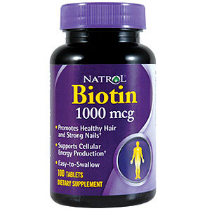
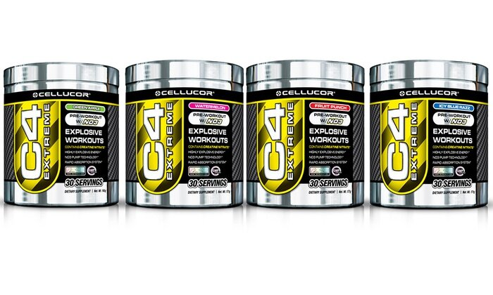
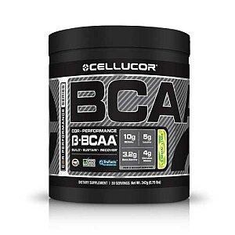

My Supplements and Vitamins
I've been getting more and more questions about what sort of supplements I take. I figured it'd be useful to make a specific post on this to explain.

In the morning, I take three pills. I take a multivitamin, biotin, and fish oil. The multivitamin is for obvious reasons. I began taking fish oil to help with joint pain. Fish oil is known to reduce inflammation, and I really feel the effects when I stop taking fish oil. It is also known to increase metabolic activity, enhance immune function, reduce triglyceride levels, and increase protein synthesis/reduce protein breakdown. I began taking biotin when I was unhealthily thin. Biotin helps your hair and nails remain shiny. When I was too thin, my hair was too dry and brittle, so I began taking biotin. I continue to take it to this day since I like the hair and nail benefits. Additionally, biotin is essential for your metabolic processes, and it also helps regulate blood sugar levels.I also obviously use whey protein powder quite often. I have a review of all my protein powders here. Whey protein is quickly absorbed by the body. It's beneficial to consume right after a workout for muscle recovery since your body is yearning for nutrients. I also use protein powder in many of my healthy baking recipes as a flour replacement.I used to take casein protein at night. Casein protein is slowly absorbed by the body (whey is rapidly absorbed). Taking casein at night helps prevent any muscle degeneration while you sleep. I discontinued my use of it though for two reasons. 1- It upset my stomach after prolonged use. Every night I had stomach knots. 2- I didn't experience drastic benefits.
Before my workouts, I take a preworkout. This is used for an energy boost and intense focus during a workout. I cycle between Cellucor's C4 Extreme and N0 Extreme. your body adjusts to a preworkout, so it's good to cycle them. I find the N0 Extreme gives me more focus during a workout, while C4 gives me more energy over focus. Everyone reacts differently, so it's about finding which you prefer. I also looooove the flavors of these!! I've tried every flavor except for Mojito C4. My favorites are pineapple and pink lemonade :) I have tried many other brands of preworkout; most are forgettable except I also really like the effects of Ronnie Coleman's Myo-Blitz and MusclePharm Assault.
Intra and post workout, I take either BCAAs or Alpha Amino, both by Cellucor. Alpha Amino is the same as the BCAAs, but with added alpha-amino complex and hydration complex. This helps increase endurance during a workout, promotes muscle growth, and reduces soreness after a workout. Overall, it aids in recovery. Again, the flavors of these are spot on and delicious. Lemon lime is my favorite.I have tried Super HD, the thermogenic fat burner made by Cellucor, out of curiosity. While I don't promote people taking fat burners for weight loss, I can see how competitors would find them useful for leaning out before a show. Again, I repeat that healthy weightloss merely needs healthy eating and working out, not a fat burner. I found that the first 48 hours, I was SO. HOT. I would sweat like crazy and it dehydrates you rapidly. You have to drink a ton of water. But then my body adjusted. I discontinued use after 2 weeks.It's pretty obvious I love love love the quality of products from cellucor. The flavors are ALWAYS spot on. And the effects and results I experience from their products are great. To get 20% off and free shipping every purchase, use the discount code "PBEECHIE" on cellucor.com! I'm pretty certain you won't be let down.